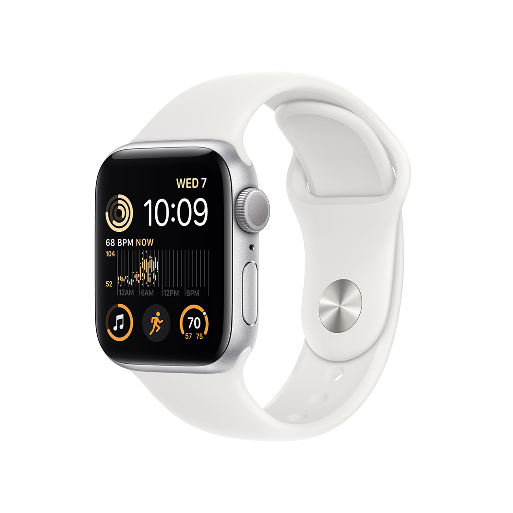
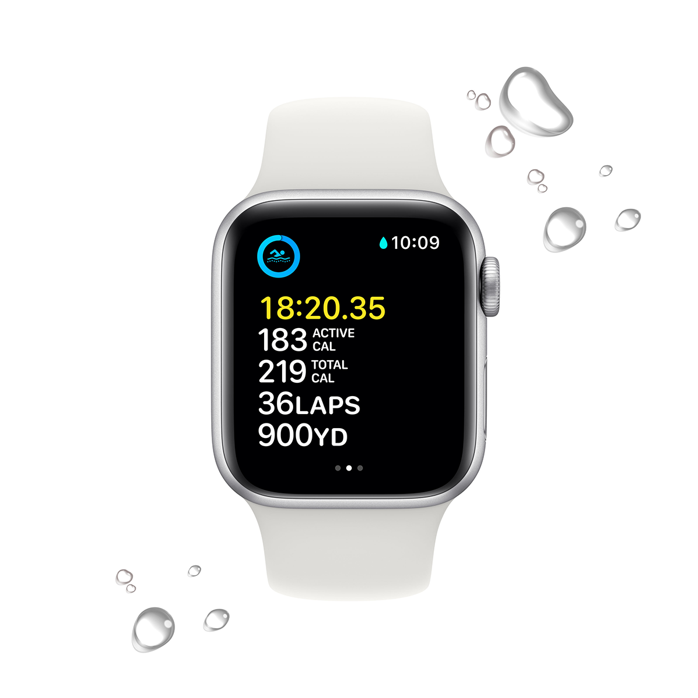
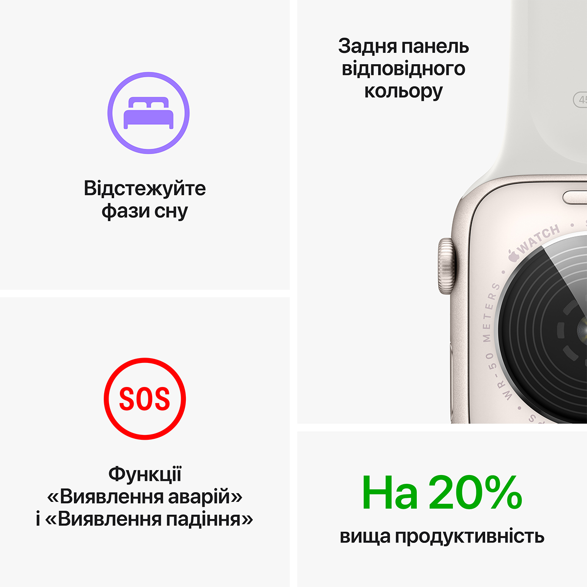
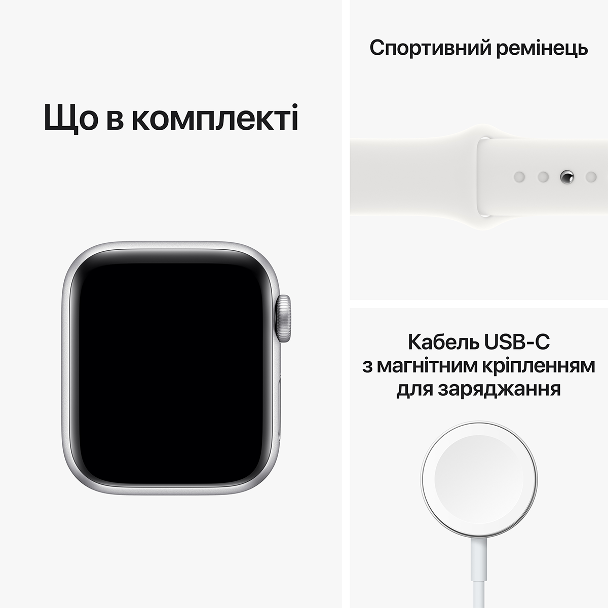

Можна закохатися. З багатьох причин.

Основні функції для підтримання здоров’я, безпеки й активного способу життя.
Захист від води
 
Основні характеристики
Відповідайте на дзвінки та повідомлення просто із зап’ястя
Отримуйте сповіщення про високий, низький і порушений серцевий ритм
До 20% швидший за попередній Apple Watch SE
Слухайте улюблену музику, подкасти й аудіокниги (для використання в моделях GPS)
Розширені функції безпеки, зокрема Виявлення падіння, Сигнал SOS і Виявлення аварій
Захист від води
Відстежуйте свою активність протягом дня з Apple Watch, а потім переглядайте тенденції в додатку «Фітнес» на iPhone
Відстеження сну дає змогу дізнатися, скільки часу ви перебували у фазах швидкого, повільного та глибокого сну
Покращений додаток «Тренування» з удосконаленими підходами до вправ
watchOS 9 підтримує покращений додаток «Тренування», новий додаток «Ліки», фази сну та дає змогу краще відстежувати ритм серця
